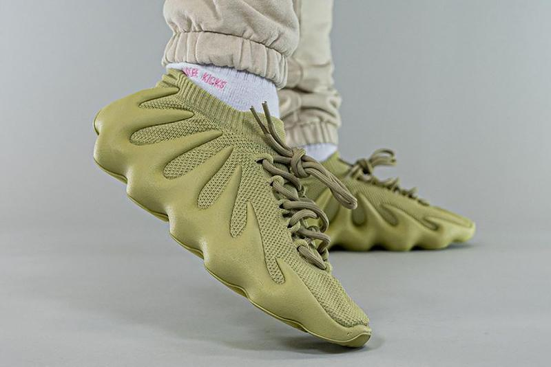

NEW

adidas Yeezy 450
The adidas Yeezy 450 is a lifestyle sneaker from the Kanye West-led and Three Stripes-backed Yeezy imprint. First teased as the Yeezy 451 in July 2018 via sketches by Mr. West himself, the sneaker debuts on March 4th, 2021 as a YEEZY SUPPLY-exclusive.
Saber más